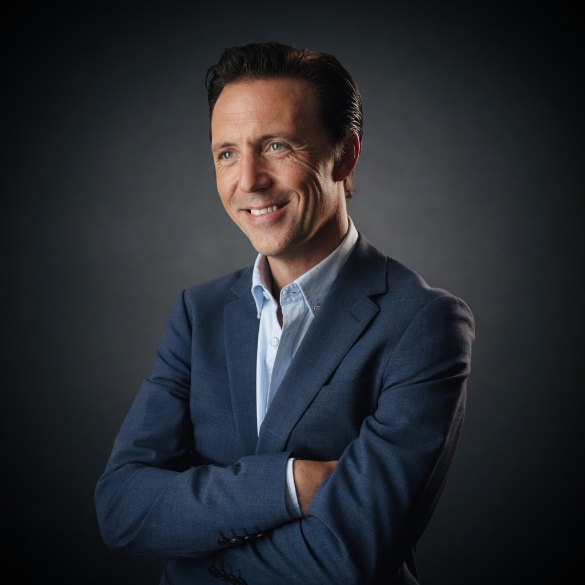

Phil Broadhead OBE
Fifteen years at the top of British public life - national political leadership, a city region of half a million people, and more than £3 billion of regeneration - now brought to bear from the Middle East.

Phil Broadhead OBE spent a decade and a half at the most senior levels of British government and politics. He led the UK's local and regional government, was a regular invitee to Cabinet in Downing Street, sat on the governing Board of the Conservative Party, and led one of the largest urban unitary authorities in the country - a city region of half a million people, a workforce of more than five thousand, and a budget approaching £1 billion. Alongside public office he founded and chaired one of the UK's largest municipally owned urban regeneration companies, with a development pipeline in excess of £3 billion, and has chaired more than a dozen public and private sector boards. He was appointed OBE in the King's Birthday Honours 2026 for public service.
Foundations
Phil grew up in the United States before returning to England, attending Bournemouth Grammar School and reading Philosophy at the University of Warwick, a member of the Russell Group. His career began at the top of the property market: first in prime central London with John D Wood and Company, working some of the capital's most valuable homes across South Kensington and Chelsea, then as a Director at one of the South's largest independent property companies, leading its prime residential and development business in Canford Cliffs and Sandbanks - home to some of the most expensive coastal real estate in Britain. It was a grounding in high-stakes negotiation, complex development, and exacting clients that would shape everything that followed.
Into public life
Elected in Bournemouth, Phil rose quickly to the council's Cabinet, taking charge of regeneration and economic development for the town. When central government moved to merge three neighbouring authorities into a single new council, he was the Cabinet member charged with overseeing the creation of Bournemouth, Christchurch and Poole Council - the reorganisation of an entire conurbation's local government, delivered on time and at scale.
He went on to lead the authority he had helped create. As Leader of BCP Council, one of the largest urban unitary authorities in the country, he carried front-line political responsibility for every aspect of a city region of half a million people - from a billion-pound budget and a five-thousand-strong workforce to planning, transformation, and the visitor economy of one of Britain's best-known coastal destinations.
The national stage
From 2020 Phil served first as First Deputy and then as Leader of Local and Regional Government for the UK - the directly elected national leader of thousands of councillors, and Chairman of the Conservative Councillors' Association. For five years he operated at the centre of British government: an invitee to Cabinet in Downing Street, working closely with four Prime Ministers and countless Secretaries of State as the national voice of local and regional government.
From 2022 he also sat on the Board of the Conservative Party - the governing body of one of the world's oldest political parties - through the most changeable period in its modern history, sharing fiscal responsibility for the Party and sitting within the decision-making machinery for its strategy and leadership elections through successive changes of Prime Minister. In parallel, as a Regional Lead Peer and Executive Board Member of the Local Government Association, he was regularly parachuted into councils requiring intervention, leading improvement across the country.
Building at scale
Phil's political leadership was matched by delivery on the ground. He founded and chaired FuturePlaces, one of the UK's largest municipally owned urban regeneration companies, assembling a team of the country's leading regeneration minds and driving a development pipeline of circa £3 billion across the South of England - work recognised by Homes England as among the most innovative in the country. He handed the chairmanship to the late Lord Kerslake, former Head of the Civil Service.
He also served as Executive Lead of the Bournemouth Development Company, a joint venture with Morgan Sindall and latterly MUSE delivering twelve major regeneration schemes across central Bournemouth, and as Strategic Director of SolarPark Energy, an early UK leader in solar canopy infrastructure. Across fifteen years he has chaired or served on more than a dozen public and private sector boards, spanning government subsidiaries, investment funds, business improvement districts, and integrated care systems.
Honours
In the King's Birthday Honours 2026, Phil was appointed Officer of the Order of the British Empire (OBE) for public service - recognition of fifteen years' contribution to British public life, from the council chamber to the Cabinet table.
Today
Phil is now based in Dubai, where he leads BDHD Group, a strategic advisory practice working at the intersection of governance, institutional capital, and market access across the UK, Europe, and the Gulf. He is an active contributor to policy debate on both sides of that bridge - from delivery capacity under the UK's new devolution settlement to institutional development in the region - and serves within Dubai's British business community. He lives in Dubai with his wife, a senior hospital consultant, and their three children.
Contact: phil@bdhd.ae · LinkedIn